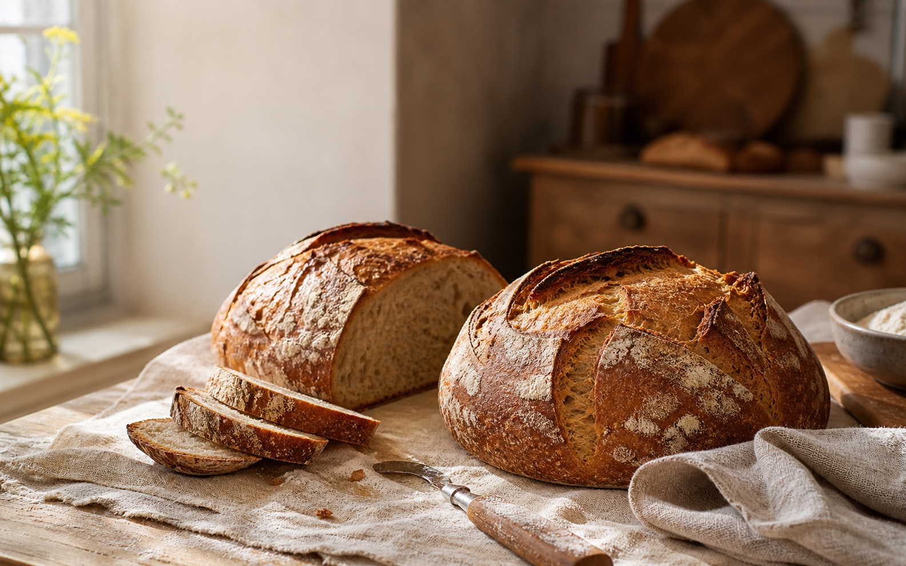
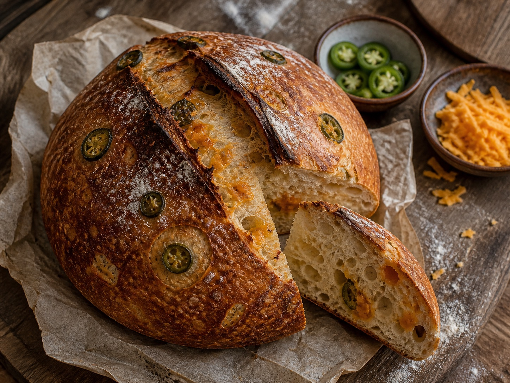
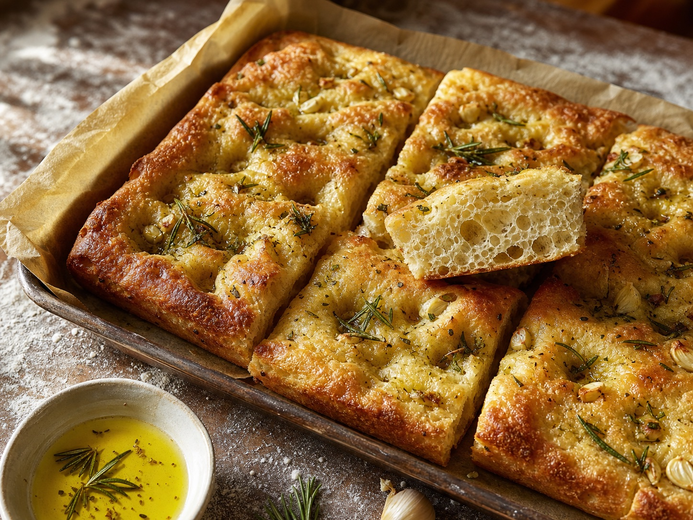
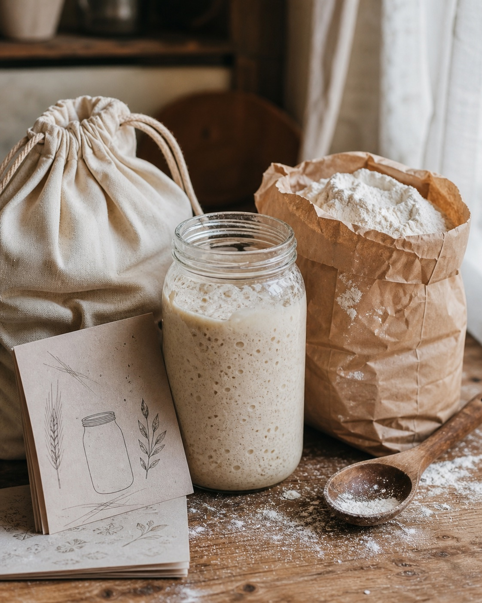
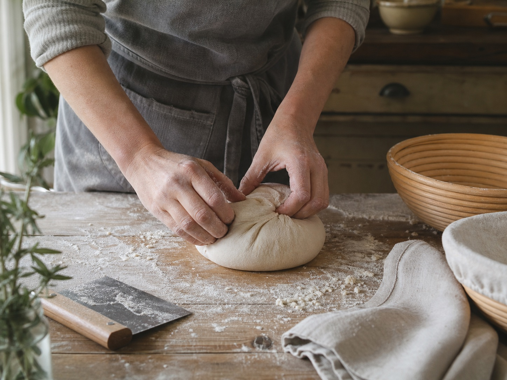
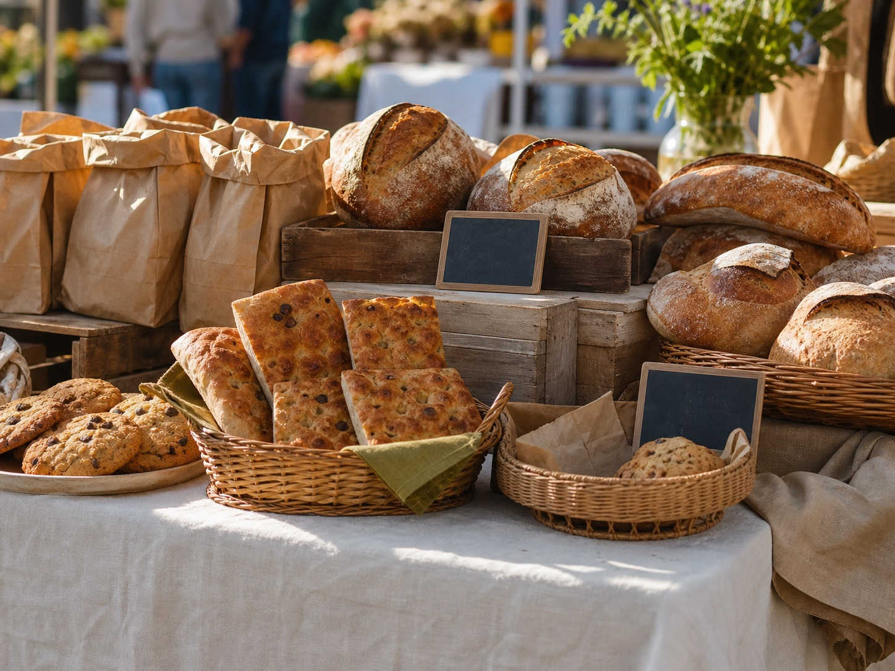
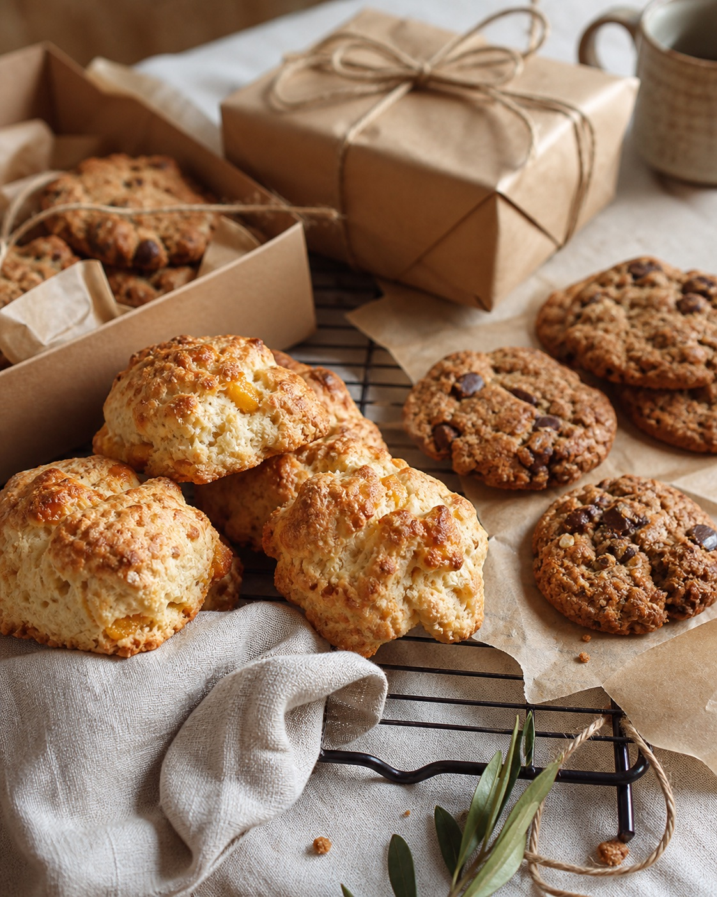

Original Country Loaf
Naturally leavened, slow-fermented, and baked for a deep crust with a tender, open crumb. The loaf that belongs on every Riverdale table.
Farmers market favorite

A short, curated menu built around long ferments, crisp crusts, and the kind of flavors that sell out first at the market table.
Naturally leavened, slow-fermented, and baked for a deep crust with a tender, open crumb. The loaf that belongs on every Riverdale table.
Farmers market favorite

Sharp cheddar, gentle heat, and a crust that carries every bite.

Dimpled, olive-oil rich, and finished with herbs for sharing.
A simple starter setup with care notes for anyone ready to begin a loaf at home.


Le Pain Sourdough is built around the quiet rhythm of slow fermentation: feeding the starter, watching the dough, shaping each batch, and baking only what can be done well.
The menu moves with the week, the market, and the people who keep coming back for a warm loaf, a focaccia square, a starter kit, or a bag of something sweet for the drive home.
Market lineups change with each bake. Message on Instagram for this week's flavors and pickup details.
Loaves, focaccia, sweets, and starter kit notes.
Rotating market favorites and small-batch extras.
Fresh bakes while quantities last.
Limited weekly batches — orders help us plan fresh bakes and set aside market pickups before the table sells through.


See weekly flavors, market updates, and behind-the-scenes bakes on Instagram.